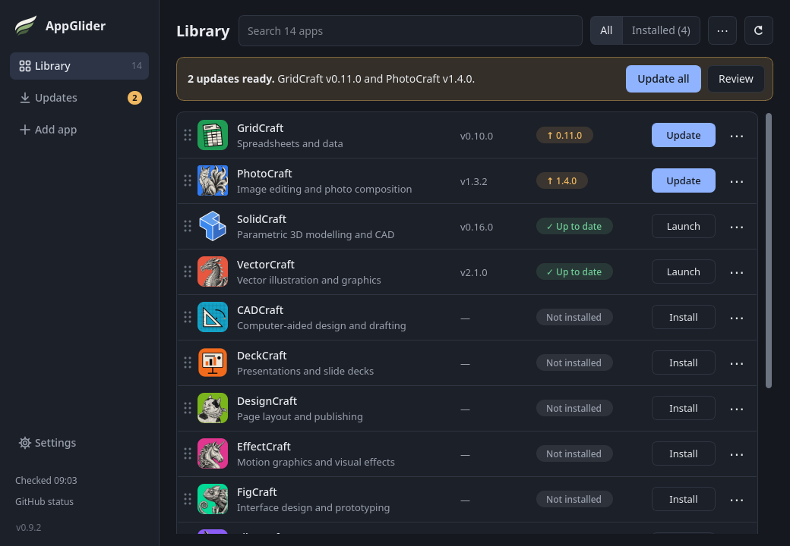

AppImages, properly managed.
AppGlider gives Linux AppImages the missing half: verified updates, desktop menu integration, zero-daemon background checks, and instant rollback safety from one calm window.
wget https://github.com/Vyrnexis/AppGlider/releases/download/v0.9.2/AppGlider-0.9.2-x86_64.AppImage && chmod +x AppGlider-*.AppImage

Engineered for Desktop Stability
No background daemons, zero root requirements, and no orphaned files.
🛡️ Cryptographic Verification
Every binary is matched against developer SHA-256 checksums and verified for valid Linux ELF/CPU headers before activation.
⏪ Atomic Rollback Protection
The previous functioning version is preserved. If an upstream release has bugs, roll back with one click.
📋 Standard XDG Integration
Generates native .desktop shortcuts with icons, categories, and custom launch options (arguments & environment variables).
⚡ Rate-Limit Friendly Checks
Background update checks for stable apps query GitHub release redirects without consuming API quota, preserving your rate limits.
📦 Curated + Any GitHub Repo
Ships pre-configured with the ArtCraft creative suite and SolidCraft, or paste any public GitHub repository to track updates.
🔒 100% User Space
Isolated in ~/.local/share/appglider/. Never asks for sudo and never touches unrelated system packages.
How AppGlider Compares
A direct, factual comparison with traditional AppImage tools like Gear Lever and AppImageLauncher.
| Capability & Guarantee | AppGlider | Gear Lever | AppImageLauncher |
|---|---|---|---|
| Runtime Format | Native AppImage Portable, self-contained, 0 dependencies |
Flatpak Requires 1–2 GB GNOME Flatpak runtime |
System package (.deb / .rpm) Requires distribution package manager |
| Privilege & System Impact | 100% User-Space No root, no daemons, no system hooks |
User-Space via Flatpak Requires Flatpak portal permissions to escape sandbox |
Root (sudo) Required Installs kernel binfmt_misc hooks & systemd service |
| Integrity: SHA-256 Checksum | Mandatory & Automatic Verifies developer's published hash before activation |
No validation Installs files without published hash check |
No validation Executes raw downloads blind |
| Binary Sanity: ELF & CPU Headers | Verified Rejects truncated, corrupt, or wrong-architecture files |
No header inspection | No header inspection |
| Update Rollback Safety | 1-Click Instant Rollback Prior working build is preserved atomically |
File keep/replace only No atomic rollback of shortcut & metadata |
No rollback Leaves old manual copies orphaned |
| Workflow & Discovery | Full Hub & Catalog Curated suite (ArtCraft, SolidCraft) + any GitHub repo |
File Integrator Manual file picking + URL pattern rules |
Passive Hook Only intercepts already-downloaded files |
| Release Channels | Stable vs. Preview & Holds Toggle channels per app; hold at specific version |
Stable vs. Pre-release via latest, latest-pre, or latest-all rules |
None |
| Update Efficiency | Zero GitHub API Quota Used Uses lightweight redirect inspection for stable apps |
Standard web/API queries | N/A (Relies on embedded zsync) |
Technical Architecture & Guarantees
How AppGlider operates under the hood on your Linux desktop.
| Property | Behavior |
|---|---|
| Runtime & UI | Python 3.11+ with PySide6 (Qt). Fully native desktop performance. |
| Filesystem Footprint | Completely confined to ~/.local/share/appglider/ (applications, icons, rollbacks). |
| Privilege Level | Strictly unprivileged user space. Zero sudo or root execution. |
| Menu Integration | Writes standard desktop entries to ~/.local/share/applications/. |
| Update Detection | HEAD requests against /releases/latest redirect. 0 GitHub API rate quota consumed. |
Current Release Integrity (v0.9.2)
Cryptographic digests for verifying your download.
| Asset | Architecture | Published SHA-256 Digest | Download |
|---|---|---|---|
| AppGlider-0.9.2-x86_64.AppImage | Linux x86_64 | 9e41fc769ff15b49386fc776c5b9c1b7e452a8d11c0f4d38... |
Download ↗ |